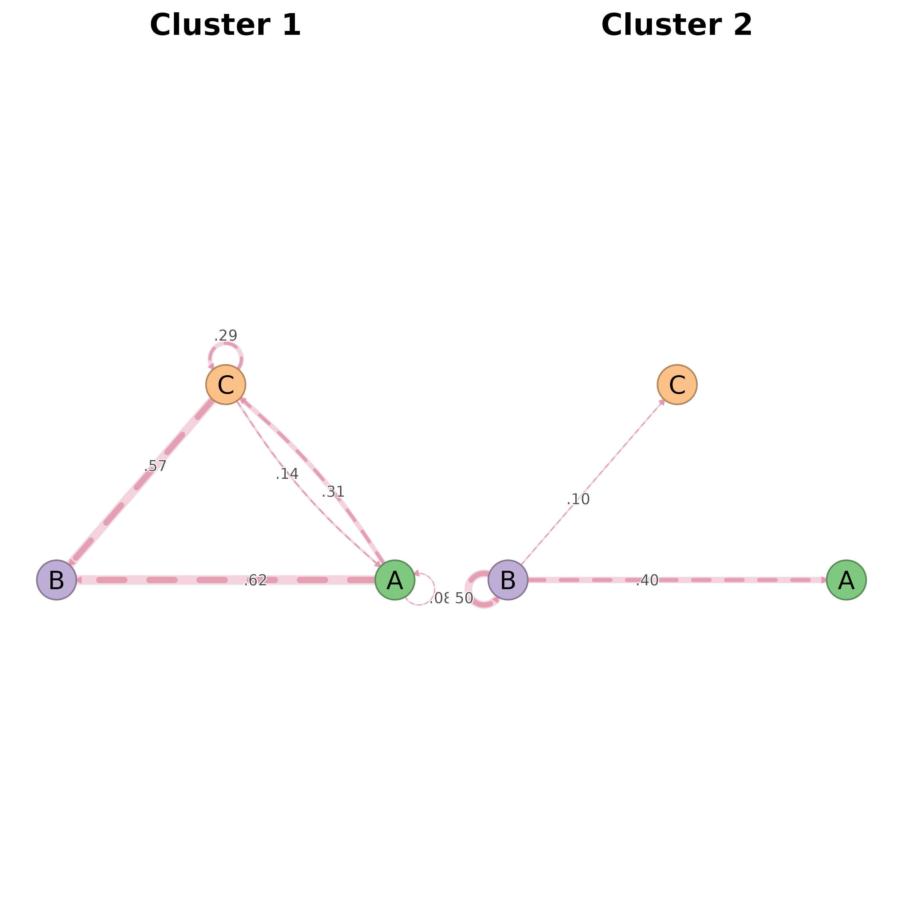

Plots each cluster's net_bootstrap in a grid, routing every panel
through splot.net_bootstrap so significance styling (solid vs
dashed edges) is preserved. Earlier versions extracted bs$original
per cluster and handed plain netobjects to splot(), which
dispatches to splot.netobject — that path has no concept of
significance, so every edge rendered identically.
Usage
plot_net_bootstrap_group(
x,
nrow = NULL,
ncol = NULL,
common_scale = TRUE,
combined = TRUE,
...
)
# S3 method for class 'net_bootstrap_group'
plot(x, ...)Arguments
- x
A
net_bootstrap_groupobject (list ofnet_bootstrap).- nrow, ncol
Grid dimensions. Defaults to auto-computed square layout.
- common_scale
Logical: use the same maximum weight across panels? Default TRUE.
- combined
Logical: when TRUE (default), arrange panels in an internal grid via
graphics::par(mfrow=...). Set to FALSE to draw into a layout the caller already configured (e.g. viapanel_layout()).- ...
Additional arguments passed to
splot.net_bootstrap(e.g.display = "significant",show_stars = FALSE).
Examples
set.seed(1)
seqs <- data.frame(T1 = sample(c("A","B","C"), 30, replace = TRUE),
T2 = sample(c("A","B","C"), 30, replace = TRUE))
grp <- Nestimate::cluster_network(seqs, k = 2)
gbs <- Nestimate::bootstrap_network(grp, iter = 10)
plot_net_bootstrap_group(gbs)
